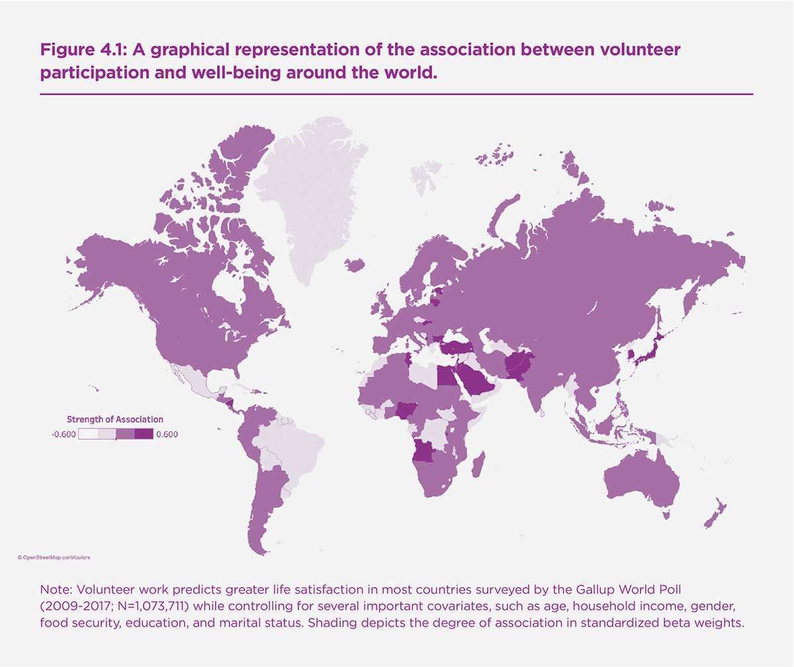
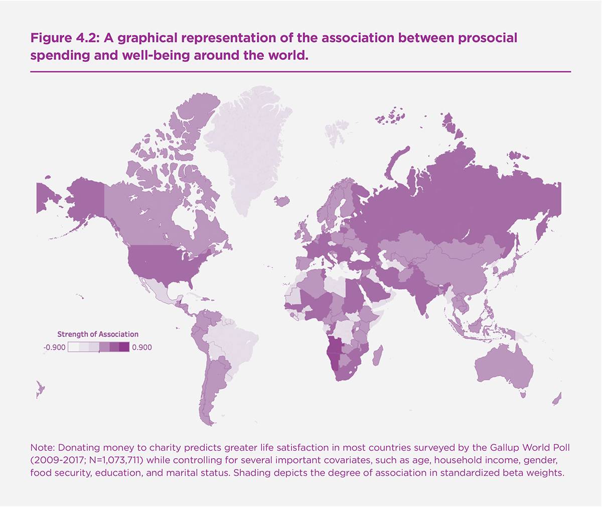
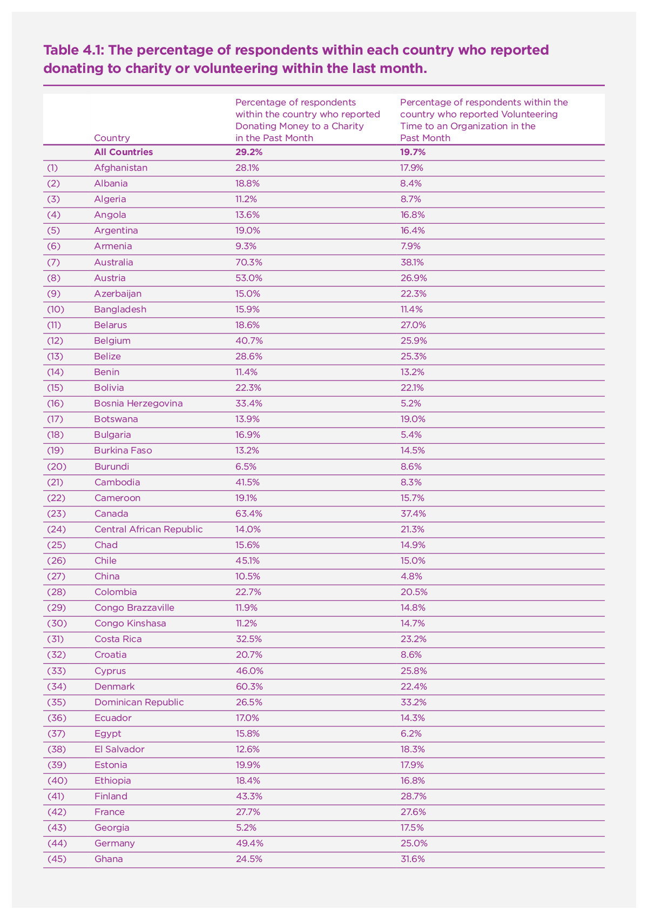
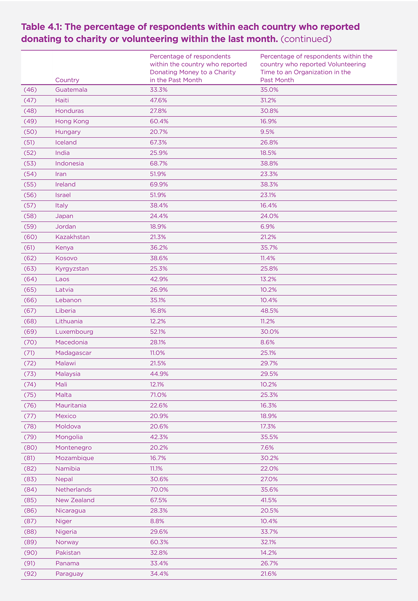
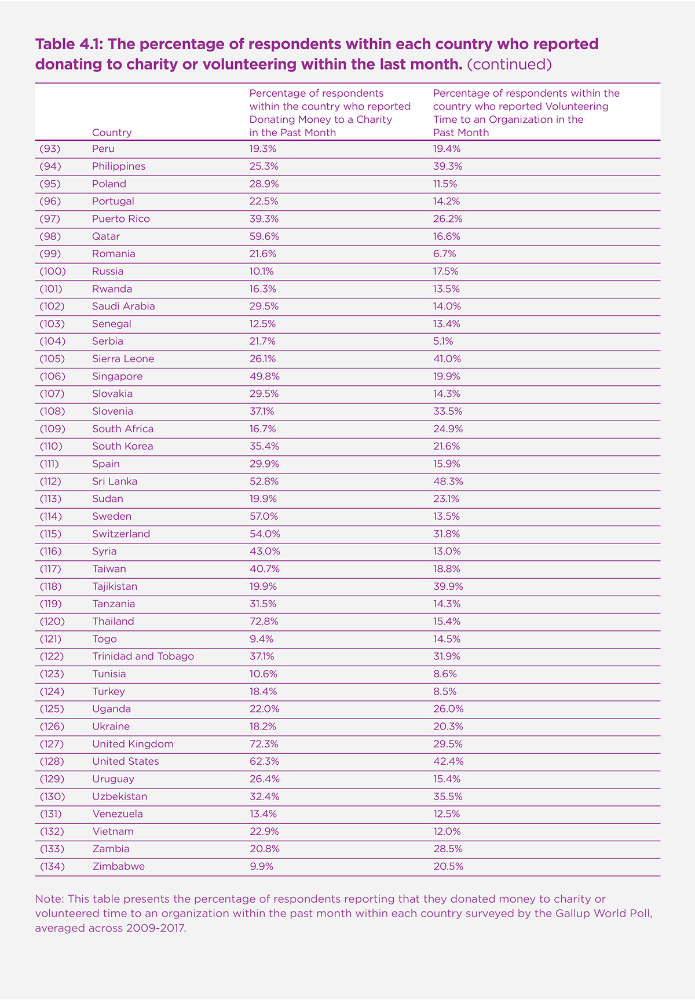

Introduction
Humans are an extremely prosocial species. Compared to most primates, humans provide more assistance to family, friends, and strangers, even when costly.[1] Why do people devote their resources to helping others? In this chapter, we examine whether engaging in two specific types of prosocial behavior, mainly donating one’s time and money to others, promotes subjective well-being, which encompasses greater positive affect, lower negative affect, and greater life satisfaction.[2] Next, we identify the conditions under which the well-being benefits of prosociality are most likely to emerge. Finally, we briefly highlight several levers that can be used to increase prosocial behavior, thereby potentially increasing well-being.
How to Interpret the Evidence
In interpreting the evidence presented in this chapter, it is crucial to recognize that most research on generosity and happiness has substantial methodological limitations. Many of the studies we describe are correlational, and therefore causal conclusions cannot be drawn. For example, if people who give to charity report higher happiness than people who do not, it is tempting to conclude that giving to charity increases happiness. But it is also possible that happier people are more likely to give to charity (i.e. reverse causality). Or, people who give to charity may be wealthier, and their wealth – not their charitable giving – may make them happy. Researchers typically try to deal with this problem by statistically controlling for “confounding variables,” such as wealth. This approach works reasonably well when the variable of interest (e.g., charitable giving) and any confounding variables (e.g., wealth) are measured with a high degree of precision.
In reality, however, it is often difficult to reliably measure complex constructs (like wealth) using brief, self-report surveys. Rather than reporting all of their assets and liabilities, survey respondents might be asked to report their household income, which provides a sensible—but incomplete—indicator of the broader construct of wealth. For example, if Sian and Kelly each earn $60,000/year, but Sian has six kids and no savings, and Kelly has no kids and a six-figure savings account, then Kelly is wealthier than Sian and may be able to give more money to charity. Now, let’s imagine the relationship between charitable giving and happiness was really explained entirely by wealth. Because income does not fully capture the complex concept of wealth, charitable giving might still predict happiness over and above income because the ability to give captures an aspect of financial security not captured by income. Although researchers have recognized these challenges for decades, recent work using computer simulations has demonstrated that effectively ruling out confounds is harder than many scholars have assumed.[3]
To overcome this issue, it is essential to conduct experiments in which the variable of interest can be manipulated without altering other variables. For example, using experimental methodology, researchers can give participants money and assign them at random to spend it on themselves or on others; because participants are assigned to engage in generous spending based on the flip of a coin (metaphorically speaking), they should not be any wealthier than those assigned to spend money on themselves, on average. While experiments may sometimes seem slight or artificial because they typically involve adjustments of small behaviours, this approach eliminates many pesky confounds, like wealth, that plague correlational research, thereby enabling statements about how generous behavior affects happiness.
As the example above illustrates, conducting experiments tends to be much costlier than simply asking survey questions. Therefore, researchers have traditionally relied on relatively small sample sizes when conducting experiments, particularly when the experiments attempt to alter people’s behavior in the real world. This reliance on small sample sizes not only creates a risk of failing to detect effects that are real—it also creates a high risk of finding “false positives,” effects that turn out not to be real.[4]
In order to establish replicable effects, researchers now recognize that it is important to conduct experiments with sufficiently large sample sizes. A recent meta-analysis concluded that experiments on helping and happiness should include at least 200 participants per condition.[5] This means that an experiment in which participants are randomly assigned to one of two conditions needs at least 400 participants in order to produce reliable results. Unfortunately, almost none of the experiments conducted in this area meet this criterion, although we specifically flag those that do. In fact, many studies in this area include fewer than 50 participants per condition (including some of our own). This is worrisome because samples sizes much under 50 are barely sufficient to detect that men weigh more than women (at least 46 men and 46 women are needed to reliably detect this difference, which is about half a standard deviation).[6] Thus, unless researchers are examining an effect that is genuinely large (i.e., bigger than the gender difference in weight), studies with group sizes under 50 run a high risk of being false positives. For this reason, we describe studies with group sizes below 50 as “small” throughout this chapter, and we urge readers to treat evidence from these studies as suggestive rather than conclusive.
Well-being Benefits of Giving Time
Volunteering is defined as helping another person with no expectation of monetary compensation.[7] A great deal of correlational research shows that spending time helping others is associated with emotional benefits for the giver. Indeed, research has documented a robust link between volunteering and greater life satisfaction, positive affect, and reduced depression. In a review of 37 correlational studies with samples ranging from 15 to over 2,100,[8] adult volunteers scored significantly higher on quality of life measures compared to non-volunteers.[9]
The conclusions of this review paper have been confirmed in two more recent large-scale examinations. First, a recent synthesis of the literature including 17 longitudinal cohort studies (N=72,241) found that volunteering was linked to greater life satisfaction, greater quality of life, and lower rates of depression.[10] The majority of the studies included in this synthesis used inconsistent quality of life measures and participants were mostly women living in North America aged fifty or older. Fortunately, converging data from a large nationally representative sample of respondents living in the UK helps to overcome these limitations. In a sample of 66,343 respondents, volunteering was associated with greater well-being, as measured by the General Health Survey, a validated scale which includes several items related to general happiness.[11] In this study, the well-being benefits of volunteering emerged most strongly for individuals forty years of age or older. Collectively, these data provide compelling evidence that there is a reliable link between volunteering and various measures of subjective well-being, while also indicating the possibility of critical moderators, which is a point we return to below.
Additional research suggests that the relationship between volunteering and well-being appears to be a cross-cultural universal. Researchers analyzed data from the Gallup World Poll, a survey that comprises representative samples from over 130 countries. Across both poor and wealthy countries (N=1,073,711), there is a positive relationship between volunteer participation and well-being (see Table 4.1 for average monthly estimates of the percentage of people who volunteered time or made charitable donations in years 2009-2017 of the Gallup World Poll, and Figure 4.1 for a graphical representation of the individual-level data depicting the strength of the relationship between volunteering and well-being for the same years).[12] These results further point to the reliability of the association between volunteering and subjective well-being across diverse economic, political, and cultural settings.[13]
Of course, it is possible that demographic differences between volunteers and non-volunteers explain observed differences in well-being.[14] For example, women are more likely than men to volunteer[15] and derive greater satisfaction from communal activities.[16] Moreover, a large survey of over 2,000 people in the UK indicates volunteers are older and from higher socioeconomic backgrounds.[17] In addition, a large sample of over 5,000 responses to the English Longitudinal Study of Aging indicates that volunteers are healthier than non-volunteers.[18] It is also possible that the benefits of volunteering are driven entirely by the fact that people who volunteer are generally more socially connected than non-volunteers.[19] Stated differently, it is possible that there is no unique relationship between volunteering and well-being. Casting doubt on these possibilities, in a sample of 10,317 women and men recruited from the Wisconsin Longitudinal Study, volunteering predicted well-being above and beyond numerous demographic characteristics and participation in self-focused social activities, such as formal sports, cultural groups, or country clubs.[20] The results of these large-scale surveys suggest a robust link between volunteering and well-being that exists beyond demographics and social connectedness.
Despite the seemingly ubiquitous association between volunteering and well-being, there is very little experimental evidence showing that volunteering causally improves happiness. For instance, in a systematic review of nine experiments with a total sample of 715 participants (median number of participants per study = 54), researchers found no evidence that volunteering casually improved well-being or reduced depressive symptoms.[21] Consistent with this observation, in a more recent experimental study, 106 Canadian 10th graders were assigned to volunteer 1-2 hours per week for 10 consecutive weeks or to a wait-list control.[22] Students assigned to volunteer showed no change in positive affect, negative affect, or self-esteem as compared to the wait-list.
Similarly, the largest known experimental study in the literature to date showed no causal impact of volunteering on subjective well-being. A sample of 293 college students in Boston were randomly assigned to complete 10-12 hours of formal volunteering each week or were randomly assigned to a wait-list control group. When subjective well-being was assessed for both groups, there was no positive benefit of formal volunteering.[23] Unlike the majority of published experimental research in this area, this experiment was pre-registered and sufficiently powered to detect a small effect of volunteering on subjective well-being. Thus, this experimental study suggests that existing correlational data may have overestimated the well-being benefits of volunteering.[24]
Another possibility is that there are critical conditions predicting when and for whom volunteering promotes well-being. In a study of more than 1,000 community dwelling older adults living in the US, volunteering was linked to greater well-being for individuals who believe that other people are fundamentally good versus those higher in hostile cynicism and believe other people are selfish and greedy.[25] As described above, older individuals benefit more from formal volunteering.[26] Relatedly, individuals who score higher in depressive symptoms also report experiencing greater boosts in well-being from volunteering. In one daily diary study— which asked 100 participants to report on their mood and helping activities each day for ten days— respondents experiencing the greatest depressive symptoms reported the greatest mood benefits from helping others.[27] Individuals who score lower in agreeableness also experience greater well-being in response to volunteering. In one experimental study (N=348), participants who scored lower in agreeableness, and who were randomly assigned to spend time helping other people in their daily life (vs. a control condition), reported the greatest increases in life satisfaction over a three-week intervention study period.[28]
In summary, the research presented in this section provides evidence for a reliable association between formal volunteering and subjective well-being in large correlational surveys but reveals little evidence for a causal relationship. Given the dearth of large-scale experimental studies sufficiently powered to explore this question, more research is needed. Recent findings indicate that individuals from at-risk groups gain the greatest benefits from volunteering, suggesting that these may be the most fruitful samples for further exploration.
Well-being Benefits of Giving Money
Spending money on others – often called prosocial spending – is associated with higher levels of well-being. Evidence for this relationship comes from various sources. For instance, individual who pay more money in taxes – thereby directing a portion of their income to fellow citizens through public goods – report greater well-being in over two decades of German panel data, even while controlling for income and a number of other predictors of happiness.[29] In addition, charitable donations appear to activate reward centers within the human brain, such as the orbital frontal cortex and ventral striatum.[30] Moreover, in a representative sample of over 600 American adults, individuals who spent more money in a typical month on others by providing gifts and donating to charity reported greater happiness.[31] Meanwhile, how much money people reported spending on themselves in a typical month was unrelated to their happiness.[32] More broadly, responses from more than one million people in 130 countries surveyed by the Gallup World Poll indicates that financial generosity – measured as whether one has donated to charity in the past month – is one of the top six predictors of life satisfaction around the world (see Table 2.1 in Chapter 2 for the latest aggregate results, while Figure 4.2 shows results based on individual data).
In contrast to the volunteering literature discussed above, the causal impact of financial generosity on happiness is supported by several small experimental studies.[33] For example, in one of the first experiments on this topic, 46 Canadian students were randomly assigned to spend a five or twenty dollar windfall on themselves or others by the end of the day. In the evening, all students were called on the phone to report their happiness levels.[34] Individuals randomly assigned to spend money on others (vs. themselves) reported significantly higher levels of happiness. Although the sample size of this initial study was very small and consisted only of university students, more recent research has provided further support for this idea. A large scale experiment using a similar design yields consistent findings with over 200 participants per condition.[35]
Several experiments support the possibility that the relationship between prosocial spending and happiness may be detectable in most humans around the globe.[36] For instance, participants in Canada (N=140), India (N=101), and Uganda (N=700) reported higher levels of happiness after reflecting on a time they spent money on others versus themselves.[37] The emotional benefits of generous spending are also detectable among individuals from rich and poor nations immediately after purchases are made. In one study, a total of 207 students from Canada and South Africa earned a small amount of money that they could use to purchase an edible treat, such as cookies or juice, available to them at a discounted price. Half the participants were told that the items they purchased were for themselves, and the other half of participants were told that the items they purchased would be donated to a sick child at a local hospital. Importantly, participants in both conditions were able to choose between whether they wanted to make a purchase (and, if so, what to buy) or take the cash for themselves. This choice provided participants with a sense of autonomy over their spending , which is important for experiencing the emotional rewards of giving (discussed in greater detail below). Immediately afterward, all participants reported their current positive affect. Converging with earlier findings, individuals who purchased items for others were happier.[38] Importantly, this finding emerged not only in Canada (where few students reported financial hardship), but also in South Africa, where more than 20% of respondents reported trouble securing food for their family in the past year.
Additional research suggests that the emotional benefits of prosocial spending are detectable even in places where people have had little to no contact with Western culture. Consider one study conducted with a small number of villagers (N=26) from a traditional society in Vanuatu, where villagers live in huts made from local materials, survive on subsistence farming, and have no running water or electricity. Villagers participated in a version of the goody-bag study, in which they earned a small sum of money that they could use to buy packaged candy, a rare treat on the island nation. Once again, half the participants were able to purchase the candy for themselves while the other half were able to purchase the candy for another villager. Consistent with previous research, villagers reported greater happiness after purchasing treats for others rather than themselves.[39]
As well as emerging around the world, the emotional rewards of giving may be detectable early in life. In one small study conducted with 20 Canadian toddlers, children were given eight edible treats and asked to share some of these treats with a puppet. Throughout the study, children’s’ facial responses were captured on film and later coded for happiness. Coders observed that toddlers showed larger smiles when giving treats away than when receiving treats themselves,[40] and this result has been replicated in a handful of subsequent studies with larger samples.[41]
Finally, the emotional rewards of prosocial spending are even detectable among recent criminal offenders. In one large, pre-registered experiment, 1295 ex-offenders were randomly assigned to purchase items for themselves or children in need before reporting their current happiness.[42] As observed in other samples, ex-offenders reported greater happiness when purchasing for others than when purchasing for themselves. Taken together, these findings point to the possibility that the well-being benefits of generous spending may be a human universal.
Financial generosity seems to lead to happiness in a variety of contexts, suggesting that it is a relatively robust effect. Studies using the goody bag paradigm demonstrate that the emotional benefits of prosocial spending emerge even when givers do not interact directly with the recipient (N=207).[43] In addition, the positive emotions that givers experience after generous spending have been detected with various assessment tools, such as self-report happiness scales and observer reports, suggesting that findings are not accidental outcomes captured on one specific measure. Indeed, in one experiment conducted with 119 Canadian university students, a research assistant unaware of a participant’s recent spending rated individuals who bought items for charity as happier than individuals who bought items for themselves.[44]
Different Currencies, Different Contexts
In addition to giving time and money, people can provide assistance in various other ways. For instance, holding the door open for a stranger, paying someone a compliment, caring for a sick relative, comforting a spouse, or returning a lost wallet are all small but meaningful forms of generous action. Consistent with much of the work reported above, these demonstrations of social support and kindness may promote well-being for the helper as well.[45] In one study, 104 participants randomly assigned to commit five random acts of kindness a week over a six-week period were happier than those assigned to a no-action control group, but only when all five acts were completed on one day per week (as opposed to spread out over a week).[46] More recently, researchers conducted a six-week experiment in which a sample of students, online workers, and community dwelling adults (N=473) were randomly assigned to commit acts of kindness for either other people, humanity/the world, or themselves; meanwhile, a neutral control group did not alter their behavior.[47] Both forms of prosocial – kindness directed to others and humanity/the world – led to the greatest happiness improvements overtime.
Even in the workplace, where most adults spend a substantial portion of their time, research suggests that prosocial behavior and a prosocial orientation are linked to emotional benefits for employees and overall job satisfaction.[48] For instance, in one well-powered longitudinal survey (from 1957-2004, N > 10,000), the importance participants reported placing on the opportunity to help others when selecting a job predicted their well-being almost 30 years later.[49] In a 3-week study, employees (N = 68) completed mood measures each morning and then several times during the course of each workday. Employees who engaged in prosocial behaviors (e.g., “Helped someone outside my workgroup” and “Covered for coworkers who were absent or on break”) experienced greater positive mood over time.[50] Yet, while every corporation offers personal incentives (in the form of wages and bonuses), far fewer companies offer prosocial incentives or bonuses – such as the opportunity to donate to charity, or to spend on co-workers. Although companies clearly believe that such “personal” incentives are effective, they are linked with some unfortunate consequences, including increased competition and decreased helping among employees.[51] While personal incentives clearly are effective in some situations and with some employees, it is possible that prosocial incentives may also be effective in not only improving the well-being of employees, but also their performance. Demonstrating this, in one small-scale field experiment (N = 139), bank employees randomly assigned to donate either $50 to charity reported not only greater job satisfaction but also greater happiness, compared to employees not given this opportunity or those assigned to donate only $25.[52]
When Giving to Others is Most Likely to Increase Well-Being
Behaving generously can increase happiness—but this effect is not inevitable. Instead, research has identified several key ingredients that seem to be important for turning good deeds into good feelings. Specifically, people are more likely to derive joy from helping others when:
they feel free to choose whether or how to help.
they feel connected to the people they are helping.
they can see how their help is making a difference.
Freedom of choice. Considering the potential benefits of giving for both individuals and society, it is tempting to require at least some groups of people (such as students or the unemployed) to engage in volunteer work or other forms of helping. But making people feel that they have been forced to help others can undercut the pleasure of giving. For example, in one study, 138 American university students were asked to keep a daily diary, reporting whether and how they helped each day, as well as rating their day-to-day happiness.[53] The students felt happier on days when they provided help to someone or did something for a good cause—but only if they did so because it seemed important to them, enjoyable, and consistent with their values. When they helped because they felt it was mandatory or necessary in order to avoid disapproval, the emotional benefits of generosity evaporated.
Similarly, data from 167 American adults reveals spending money on others is associated with greater happiness among individuals who believe strongly in social justice, equality, helping and similar self-transcendent values.[54] But there is no detectable relationship between prosocial spending and happiness for individuals who do not endorse such self-transcendent values, suggesting that requiring these people to help would not improve their happiness.
The importance of free choice may help to explain a long-standing puzzle within research on volunteering: Older people tend to derive greater emotional benefits from volunteering than younger people.[55] Although a variety of factors may contribute to this age difference, scholars have argued that younger people may derive less pleasure from volunteering in part because they are more likely to see this activity as an obligation—something they have to do to gain work experience.[56]
Several small experimental studies provide supporting evidence for the idea that choice matters. In one experiment, 80 American university students made a series of decisions about how to divide a windfall of $5 between themselves and another participant. The more they gave away, the better they felt afterward.[57] However, when the opportunity to choose was removed, such that participants were forced to give a certain amount of money away, the benefits of giving disappeared entirely. And in an fMRI study with 19 participants, people exhibited greater activation in regions of the brain linked to processing rewards when they were allowed to make voluntary donations to a local food bank than when these donations were mandatory.[58] Participants in this study also reported feeling 10% more satisfied with their donation when it was voluntary rather than mandatory, even though the money was always going to a good cause.
How, then, can people be encouraged to engage in generous behavior, without undermining the emotional benefits of their generosity? Simply altering the way help is requested or framed may make a difference. In a small lab study, 104 American university students were presented with an opportunity to help out with a task and were told that they “should help out” or that “it’s entirely your choice whether to help or not.”[59] When their freedom to choose was highlighted, participants felt happier after helping compared to those who were told they should help. In a more extensive six-week study, 218 university students across both the US and South Korea were required to complete acts of kindness each week.[60] Half of them were randomly assigned to receive messages designed to support their feelings of autonomy by, for example, emphasizing that how and where they chose to help was entirely up to them. Across both cultural groups, students who received these messages showed greater improvement in happiness compared to students who engaged in acts of kindness without receiving these messages. These results were somewhat inconsistent across outcome measures, however, and like all of the findings presented in this section, this promising approach would be worthwhile to test on a larger scale.
Social connection. When engaging in generous behavior provides opportunities for positive social interactions and relationships, helping is likely to be especially beneficial for the helper. Correlational research on volunteering suggests that part of the reason volunteers are less depressed than non-volunteers is simply that volunteers attend more meetings, providing more opportunities for social integration.[61] A correlational study of spending habits points to a similar conclusion. A sample of over 1,500 Japanese students were asked whether they had spent any money on others over the summer and whether doing so had exerted any positive influence on their social relationships. Most students who spent money on others reported that this expenditure had positively influenced their relationships.[62] And these students reported greater overall happiness compared to students who had not spent money on others or had spent money on others without perceiving any positive impact on their relationships. Of course, these correlational findings are open to a variety of explanations—for example, happier people may simply be more likely to spend money on others and to perceive positive effects on their relationships.
Several small experimental studies provide at least some supporting evidence for the idea that feelings of social connection are important in turning generosity into happiness. When 80 adults were approached on a Canadian university campus and asked to reflect on a past prosocial spending experience, they felt happier if they were asked to think about spending money on a close friend or family member rather than an acquaintance.[63] Even when people give money to stranger or acquaintances, providing an opportunity for social interaction might increase the emotional benefits of giving. A small sample of twenty-four students in a lecture hall were given $10 and allowed to decide how much, if any, to share with a classmate who had not received any money.[64] The more money these students gave away, the better they felt afterward—but only if they were allowed to deliver the money in person to their classmate. When students made the same decision without having the opportunity to personally deliver the donation, those who gave away more money actually felt slightly worse.
For charities, then, an important challenge lies in making donors feel connected to causes that otherwise would feel distant or unfamiliar. To explore this idea, researchers approached 68 adults on a Canadian university campus and presented them with an opportunity to donate to a charity that provides fresh water to rural African communities.[65] Half the time, the researcher disclosed that she was personally involved with the charity and that she was helping raise money for a friend who had recently returned from working with the charity in Africa. The rest of the time, the researcher did not reveal this information. Although participants made their donations in private, without the researcher’s knowledge, they got more of an emotional boost from giving if they knew that the researcher was personally connected to the cause.[66] Because this experiment (like all the others in this section) relied on a small convenience sample, these results should be interpreted with special caution. Still, we would tentatively suggest that enhancing feelings of social connection for volunteers and donors may represent a promising avenue for increasing the emotional benefits of helping.
Seeing how you made a difference. Generous behavior may be more likely to promote happiness when helpers can easily see how their actions make a difference for others. When people look back on their past acts of kindness, they feel happier if they are asked to think about actions that were motivated by a genuine concern for others, rather than by benefits for themselves (N=299).[67] This finding aligns with research examining the health correlates of volunteering. For instance, a study examining data from over 10,000 individuals in the Wisconsin Longitudinal Study found that volunteering is associated with lower mortality risk in older adults,[68] but only when volunteering is motivated by other-oriented (as opposed to self-oriented) reasons.[69] These findings tentatively suggest that helping people see how their actions make a difference for others might enhance their long-term positive feelings about engaging in acts of kindness.
To test this idea more directly, researchers presented 120 people on a Canadian university campus with an opportunity to donate to charity.[70] Half of them were asked to donate to UNICEF. The others were asked to donate to Spread the Net. Although both UNICEF and Spread the Net are devoted to promoting children’s health, UNICEF tackles a very broad range of initiatives, potentially making it difficult for donors to envision how their dollars will make a difference. In contrast, Spread the Net offers a clear, concrete promise: For every $10 donated, they supply one bed net to protect a child from malaria. The more participants donated to Spread the Net, the better they felt afterward, whereas this emotional “return on investment” was eliminated when people gave money to UNICEF. This finding suggests that charities may be able to increase donors’ happiness by making it easier for them to envision how their help is making a concrete difference.
In fact, simply re-framing helpers’ goals to be more concrete and achievable can make giving feel more satisfying.[71] While taking a break between completing surveys, 92 American university students were asked to help recruit bone marrow donors by preparing flyers. Before completing this task, they were asked to pursue either a relatively abstract goal (providing “hope” to those in need of bone marrow donations) or a more concrete one (providing “a better chance of finding a donor”). After helping out with the fliers, individuals who had been told to pursue the more concrete goal felt happier than those presented with the more abstract goal. Thus, by prompting donors and volunteers to give with a concrete, achievable goal in mind, charities may be able to increase the emotional rewards of their contributions.
Finally, some research suggests that the benefits of having a specific prosocial impact also strengthen the link between helping and emotional benefits both at and after work.[72] Indeed, some initial evidence from a small sample (N = 33) of employees suggests that feelings of prosocial impact may in some cases lead to improved employee performance. In a two week longitudinal study, call center employees who read information about how their work made a difference in the lives of others were more successful in garnering donations than workers who read about how their work could benefit them personally, or those in a control condition.[73]
Summary and implications for policy. Research on the factors that amplify the happiness benefits of helping is limited, due to reliance on correlational designs and experiments with small convenience samples. Still, this literature provides some valuable clues: people seem most likely to derive happiness from giving experiences that provide a sense of free choice, opportunities for social connection, and a chance to see how the help has made a difference.
Policies and programs that offer all three of these ingredients may have a particularly high likelihood of providing happiness benefits for givers. For example, consider Canada’s innovative Group of 5 program, whereby any five Canadians can privately sponsor a family of refugees. Although tax dollars provide support for refugees in many countries, Canada is the only country in the world that allows ordinary citizens to take such an autonomous role in this process. After raising enough money to support a family for their first year in Canada, the sponsorship group has the opportunity to meet the family at the airport, as they first set foot in Canada. Because the sponsorship group provides help with everything from finding housing and a family doctor to getting the kids enrolled in school, there is ample opportunity to see how the family’s life is being transformed and to develop strong social relationships with them. It is also notable that no Canadian is allowed to undertake this alone; requiring people to work together in a group of five or more is likely to increase social bonds among those who want to help (as well as improving feasibility). Thus, this policy provides a model of one way in which governments can facilitate positive helping experiences for their own citizens, while addressing broader problems in the world.
Finally, while the evidence above examines the link between prosociality and happiness for the giver, it is worth asking if receiving assistance is beneficial for the recipient. To this end, a large body of research demonstrates that receiving social support, such as encouragement from close others, is typically associated with greater psychological and physical well-being.[74] However, receiving other forms of aid, such as financial support, may have detrimental consequences for the recipient because it may lead to social stigma[75] or threaten one’s self-esteem.[76] As a result, it is critical to examine when generosity is beneficial for both parties. To the best of our knowledge, research in this area is limited but early evidence suggests that two of the aforementioned ingredients – autonomy and social connection – may prove important. Highlighting the value of autonomy, one small experiment (N=124) found that both helpers and recipients experienced greater positive emotion after helpers provided autonomous help (as opposed to controlled help or no help at all).[77] Another small study demonstrates the potential value of social connection. Above we described a study in which twenty-four students could decide how much of a $10 sum to give another student in their classroom.[78] Givers were happier when they gave more money, but only when the funds were delivered in person. Interestingly, recipients also reported greater happiness from receiving more money when the funds were given in person (vs. through an intermediary). Taken together these findings provide tentative evidence that giving which facilitates autonomy and social connection may offer the greatest benefits for both parties.
How to Encourage Prosociality
Given its benefits, how can prosociality be encouraged? A large body of research suggests that prosocial behavior can be increased through various individual, organizational, and cultural factors, some of which we briefly describe below.
At the individual level, some research suggests that helpers are more likely to provide assistance when experiencing positive emotional states.[79] For instance, awe – a positive emotion felt when encountering vast and expansive stimuli, such a panoramic view of the Pacific Ocean – is associated with and leads to greater generosity. Evidence supporting this claim comes from several sources. Among a large, nationally representative sample of over 1,500 Americans, people reporting that they experience more awe in their daily lives were also more likely to generously share raffle tickets for a large cash draw with a stranger.[80] Supplementing this correlational research, an experiment conducted with 254 students suggests that awe causally increases generosity. Students randomly assigned to view an awe-inducing video of stunning nature scenes were more generous in a subsequent task than students shown an amusing or emotionally neutral film.[81] How can communities and policy makers harness this research to increase generosity? One way may be to invest in public green spaces, such as parks, trails, or beaches. Exposure to nature, especially scenes that are large and expansive, may boost kindness in light of the research discussed above.
A number of other factors have been shown to promote prosocial behavior. As just one
example, some evidence suggests that people donate more money to charitable causes and campaigns when they appreciate how their assistance will help those in need. For instance, one experiment found that providing potential donors with information about how their funds would be used led to donations that were nearly double the size.[82] Therefore, information about the impact of one’s help may not only unleash the emotional benefits of giving as discussed above, it may also increase generosity. Organizations and charities can capitalize on these findings by providing clear information about their programs. Doing so allows people to see how they can effectively improve the lives of vulnerable targets, which should bolster support from potential donors.
In addition, certain large-scale or cultural factors can impact generosity as well. For instance, culture may shape the rates and forms of help provided around the world. Indeed, while generosity appears to be valued in many cultures,[83] cultural norms shape rates and forms of helping behavior.[84] In our analyses of the Gallup World Poll, it is evident that rates of volunteering and charitable giving differ dramatically depending on the cultural context. For example, rates of charitable donation within the past month range from the lowest of 7% of respondents in Myanmar to the highest of 89% in Burundi (See Table 4.1).
Conclusion
This chapter summarizes research on the link between prosocial behavior and happiness. While numerous large-scale surveys document a robust association between donating time and well-being (even while statistically controlling for a number of confounds), experimental evidence offers little support for a causal relationship. Meanwhile, a growing body of experimental evidence suggests that using money to benefit others leads to happiness. Future research should aim to utilize large, pre-registered experiments that identify key predictions in advance.
As research examining these questions continues, there may be opportunities for testing and harnessing the benefits of prosociality in daily life. For instance, education and health care services may adopt prosocial strategies that can be compared to current “business as usual” practices used elsewhere. This also has the advantage of building collaborations spanning academic, private, and governmental partners. The involvement of front-line service providers in both the design and execution of alternatives would do much to increase the success, policy relevance and wider application of the innovations being tested. Harnessing pro-sociality offers the prospect of managing institutions and delivering services in ways that can save resources while potentially boosting happiness for all parties.[85]
Figure 4.1. A graphical representation of the association between volunteer participation and well-being around the world.

Note: Volunteer work predicts greater life satisfaction in most countries surveyed by the Gallup World Poll (2009-2017; N=1,073,711) while controlling for several important covariates, such as age, household income, gender, food security, education, and marital status. Shading depicts the degree of association in standardized beta weights.
Figure 4.2. A graphical representation of the association between prosocial spending and well-being around the world.

Note: Donating money to charity predicts greater life satisfaction in most countries surveyed by the Gallup World Poll (2009-2017; N=1,073,711) while controlling for several important covariates, such as age, household income, gender, food security, education, and marital status. Shading depicts the degree of association in standardized beta weights.
Table 4.1. The percentage of respondents within each country who reported donating to charity or volunteering within the last month.



Note: This table presents the percentage of respondents reporting that they donated money to charity or volunteered time to an organization within the past month within each country surveyed by the Gallup World Poll, averaged across 2009-2017.
Endnotes
Fehr & Fischbacher, 2003; Warneken & Tomasello, 2006 ↩︎
Diener, 1999 ↩︎
Westfall & Yarkoni, 2016 ↩︎
Fraley & Vazire, 2014 ↩︎
Curry et al., 2018 ↩︎
Simmons et al., 2011 ↩︎
Tilly & Tilly, 1994 ↩︎
Wheeler, Gorey & Greenblatt ,1998 ↩︎
see also Brown & Brown, 2005; Grimm, Spring, & Dietz, 2007; Harris & Thoreson, 2005; Musick & Wilson, 2003; Oman, 2007; Wilson & Musick, 1999 ↩︎
Jenkinson et al., 2013 ↩︎
Tabassum, Mohan & Smith, 2016 ↩︎
Mimicing analyses from Aknin et al. 2013, we examined the relationship between SWB and volunteering while controlling for household income and whether respondents had lacked money to buy food in last year as well as demographic variables (age, gender, marital status, and education level). We also included dummy controls for year/wave of data collection and the specific well-being measure used. This allowed us to create a regression equation for each country, pooled over years 2009-2017, examining the relationship between volunteering and well-being at the individual level while controlling for household income, food inadequacy, age, gender, marital status, and education across various waves of the GWP and measures of well-being. These findings are shown in Figure 4.1. A nearly identical analysis was conducted for prosocial spending in Figure 4.2; the only difference is that the volunteering information was replaced with charitable donation information. ↩︎
see also Kumar et al., 2012, c.f. Fiorillo & Nappo, 2013; Haski-Leventhal, 2009 ↩︎
Bekkers, 2012 ↩︎
Jenkinson et al., 2013 ↩︎
e.g., Willer, Wimer & Owens, 2012 ↩︎
Low, Butt, Ellis, & Smith, 2007 ↩︎
McMunn et al., 2009 ↩︎
Creaven, Healy & Howard, 2018 ↩︎
Piliavin & Siegl, 200, c.f., Creaven, Healy & Howard, 2017 ↩︎
Jenkinson et al., 2013 ↩︎
Schreier, Schonert-Reichl, & Chen, 2013 ↩︎
Whillans et al., 2016 ↩︎
see also Ruhm, 2000; Wilkinson, 1992 ↩︎
Poulin, 2014, see Konrath et al., 2012 for similar results ↩︎
see also Van Willigen, 2000; Wheeler, Gorey & Greenblatt, 1998 ↩︎
Schacter & Margolin, 2018 ↩︎
Mongrain, Barnes, Barnhart & Zalan, 2018 ↩︎
Akay et al., 2012 ↩︎
Harbaugh, Mayr, & Bughart, 2007; Moll et al., 2006; Tankersley, Stowe, & Huettel, 2007 ↩︎
Dunn, Aknin, & Norton, 2008 ↩︎
Dunn et al., 2008 ↩︎
see Curry et al., 2018 for meta-analysis ↩︎
Dunn et al., 2008 ↩︎
Whillans, Aknin, Ross, Chen, & Chen, under review ↩︎
Aknin, Barrington-Leigh et al., 2013 ↩︎
Aknin, Barrington-Leigh et al., 2013 ↩︎
Aknin, Barrington-Leigh et al., 2013 ↩︎
Aknin, Broesch, Hamlin, & Van de Vondervoort, 2015 ↩︎
Aknin, Hamlin & Dunn, 2012 ↩︎
Van de Vondervoort, Hamlin & Aknin, in prep ↩︎
Hanniball et al., 2018 ↩︎
see Study 3 in Aknin, Barrington-Leigh et al., 2013 ↩︎
Aknin, Fleerackers & Hamlin, 2014 ↩︎
e.g., Brown, Nesse, Vinokur & Smith, 2003; Inagaki & Oherek, 2017; Uchino, Cacioppo, & Kiecolt-Glaser, 1996 ↩︎
Lyubomirsky et al., 2005 ↩︎
Nelson and colleagues (2016) ↩︎
e.g., Grant, 2007 ↩︎
Moynihan, DeLeire, & Enami, 2015 ↩︎
Glomb, Bhave, Miner, & Wall, 2011 ↩︎
Bloom, 1999; Lazear, 1989 ↩︎
Anik, Aknin, Dunn, Norton, & Quoidbach, 2013 ↩︎
Weinstein & Ryan, 2010 ↩︎
Hill & Howell, 2014 ↩︎
Musick & Wilson, 2003 ↩︎
Musick & Wilson, 2003 ↩︎
Weinstein & Ryan, 2010 ↩︎
Harbaugh, Mayr, & Burghart, 2007; see Hubbard et al., 2016 for a conceptual replication ↩︎
Weinstein & Ryan, 2010 ↩︎
Nelson et al., 2015 ↩︎
Musick & Wilson, 2003 ↩︎
Yamaguchi et al., 2016 ↩︎
Aknin, Sandstrom, Dunn, & Norton, 2011 ↩︎
Aknin, Sandstrom, Dunn, & Norton, 2013 ↩︎
Aknin, Sandstrom, Dunn, & Norton, 2013 ↩︎
Aknin, Sandstrom, Dunn, & Norton, 2013 ↩︎
Wiwad & Aknin, 2017 ↩︎
Konrath, Fuhrel-Forbis, Lou and Brown (2012) ↩︎
see also Poulin, 2014 ↩︎
Aknin et al. (2013) ↩︎
Rudd, Aaker, & Norton, 2014 ↩︎
Grant & Sonnentag, 2010; Sonnentag & Grant 2012 ↩︎
Grant, 2008 ↩︎
e.g., Holt-Lunstad, Smith, Baker, Harris & Stephenson, 2015; Uchino et al., 1996 ↩︎
Rothstein, 1998 ↩︎
e.g., Fisher, Nadler & Whitcher-Alagna, 1982 ↩︎
Weinstein & Ryan, 2010 ↩︎
Aknin, Dunn, Sandstrom, & Norton, 2013 ↩︎
see Aknin, Van de Vondervoort, & Hamlin, 2018 for summary of child and adult evidence ↩︎
Piff, Dietze, Feinberg, Stancato, & Keltner, 2015 ↩︎
Piff et al., 2015 ↩︎
Cryder et al., 2013, c.f. Aknin, Dunn, Whillans, Grant & Norton, 2013 ↩︎
Klein, Grossmann, Uskul, Kraus, & Epley, 2015 ↩︎
House et al. 2013 ↩︎
Frijers, 2013; Helliwell & Aknin, 2018 ↩︎